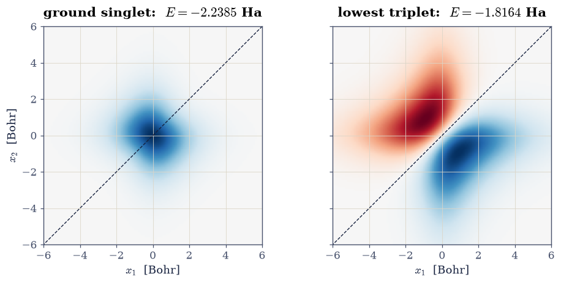
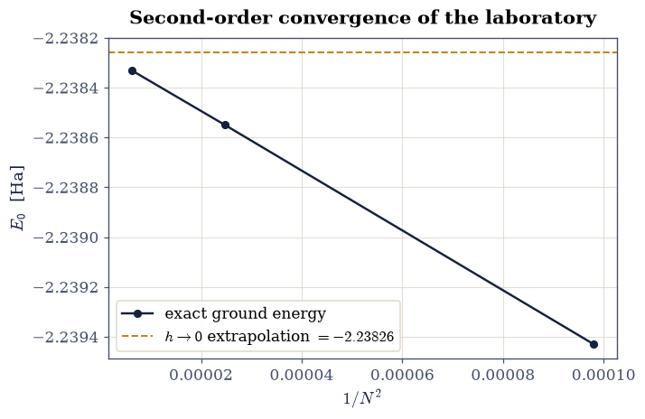
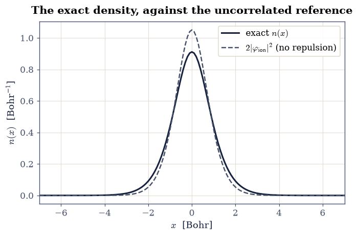
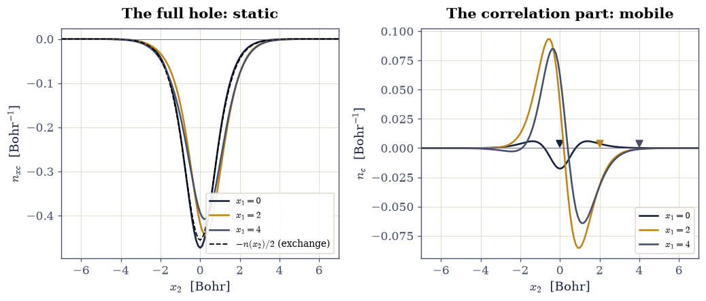
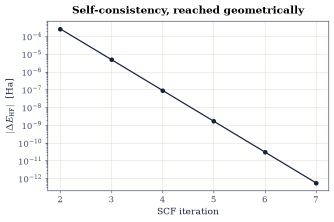

8.2 An Exact Laboratory: Two Electrons on a Grid#
Notebook overview#
§8.1 measured the exponential wall and found it impassable in general. This notebook exploits the one gap: for \(N = 2\) electrons in one dimension the full wavefunction \(\Psi(x_1, x_2)\) is just a function of two variables, a modest matrix of grid values, and the many-body Schrödinger equation becomes a sparse eigenproblem a laptop solves in seconds. That makes the system a laboratory: small enough to solve exactly, rich enough to contain interaction, exchange, and correlation in full. The volume will return to it again and again — the exact exchange-correlation potential is extracted from it in §8.6, the local-density approximation is judged against it in §8.7, the piecewise-linearity theorem is exhibited on it in §8.8, and its real-time dynamics referee time-dependent DFT in §8.16.
The build proceeds in the order a real calculation would. First the one-electron reference states of the soft-Coulomb well (the “helium ion” of the model). Then the two-electron Hamiltonian as a Kronecker sum plus a diagonal interaction, its ground singlet and lowest triplet, and the exchange symmetry read directly off the computed wavefunctions. A convergence ladder in the grid spacing certifies the digits. From the exact \(\Psi\) we then extract the objects density-functional theory is built from: the density \(n(x)\), the pair density, and the exchange-correlation hole with its exact \(-1\) sum rule. Finally we solve restricted Hartree–Fock on the same grid and take the difference: the correlation energy of the laboratory, \(E_c = -0.01405\) Hartree, a number this volume computed rather than quoted, and the standard against which every functional to come will be measured.
Conventions (this notebook). Hartree atomic units (§8.1). The laboratory is fixed once for the whole volume: external potential \(v(x) = -2/\sqrt{x^2 + 1}\) (a softened charge-2 nucleus), interaction \(w(x_1, x_2) = 1/\sqrt{(x_1 - x_2)^2 + 1}\), box \(x \in [-10, 10]\) with hard walls, run-of-record grid \(N = 201\) points (\(h = 0.1\)). Two-electron states are matrices \(\Psi_{jk} = \Psi(x_j, x_k)\) normalized by \(\sum_{jk} \Psi_{jk}^2\, h^2 = 1\); the sparse ground state comes from
scipy.sparse.linalg.eigsh(which="SA"). Spatial symmetry under \(x_1 \leftrightarrow x_2\) stands in for spin: symmetric = singlet, antisymmetric = triplet (the antisymmetrization postulate of §6.20 applied to the total state).How to read the checks. Each exercise closes with a
validatecall against an independent fact: a norm that must be exactly 2, a sum rule that must be exactly \(-1\), a Richardson ratio that must be 4, a variational bound. A ✓ is strong evidence; a ✗ is a prompt to locate the discrepancy, not an automatic verdict.Scope. The soft-Coulomb model is the standard benchmarking system of the time-dependent DFT and strong-field communities precisely because it is exactly solvable; see Ullrich [Ull12], App. and Ch. 9, for its pedigree. The Hartree–Fock theory used here is specialized to two electrons in one orbital; the general derivation is §8.3. Martin [Mar04], Ch. 5, and Parr & Yang [PY89], Ch. 2, cover the pair-density and hole formalism in full.
Theory in brief#
The laboratory’s Hamiltonian, and why it fits in memory#
The system is two electrons on a line, bound by a softened charge-2 nucleus and repelling each other through a softened Coulomb interaction. Softening (the \(\sqrt{\,\cdot\, + 1}\) in place of an absolute value) is what makes one dimension an honest model of three: it removes the non-integrable \(1/|x|\) singularity while keeping the long-range tail that makes atoms atoms (Ullrich [Ull12]). The Hamiltonian is
On a grid of \(N\) points the one-body operator \(\hat h\) is the familiar tridiagonal
matrix of §6.10, and the
two-body operator inherits a beautiful structure: the kinetic-plus-external part is
the Kronecker sum \(h \otimes \mathbb 1 + \mathbb 1 \otimes h\) (each term acts on
one coordinate and ignores the other), while the interaction, diagonal in the
position basis, is simply the vector \(w(x_j, x_k)\) laid along the diagonal. The full
matrix is \(N^2 \times N^2\) but overwhelmingly sparse (five nonzero diagonals), which
is exactly the regime scipy.sparse.linalg.eigsh — the Lanczos-type solver the
course has used since §6.10 —
is built for.
Exchange symmetry without spin machinery#
The Hamiltonian Eq. 861 contains no spin, so the total state factorizes into (spatial) × (spin), and the antisymmetrization postulate of §6.20 links the two: a spatially symmetric \(\Psi(x_1, x_2) = \Psi(x_2, x_1)\) must carry the antisymmetric spin singlet, and a spatially antisymmetric \(\Psi\) the symmetric triplet. The computation therefore never needs Pauli matrices; it needs only to read the symmetry off the eigenvector, which on the grid is one transposition: \(\Psi \mapsto \Psi^{\mathsf T}\). The ground state of a one-dimensional two-electron system is nodeless and hence symmetric — a singlet — and the lowest antisymmetric state vanishes identically on the diagonal \(x_1 = x_2\): the exchange node, Pauli’s principle drawn as a line of zeros.
Density, pair density, and the hole#
Density-functional theory’s cast of characters all derive from \(\Psi\) by integration. The density and pair density of a two-electron state are
normalized to \(\int n = 2\) and \(\iint n_2 = N(N-1) = 2\): \(n_2(x_1,x_2)\) is the probability density of finding a pair at \((x_1, x_2)\). If electrons ignored each other, \(n_2\) would factorize as \(n(x_1)\,n(x_2)\,(N-1)/N\); the failure to factorize is interaction made visible, and it is conventionally packaged as the exchange-correlation hole around an electron known to be at \(x_1\) (Parr & Yang [PY89], Ch. 2):
The sum rule on the right is exact and universal: an electron at \(x_1\) digs a hole in the remaining density containing exactly one missing electron (it cannot repel more charge than exists). This single constraint, satisfied by construction in the local-density approximation, is a large part of why LDA works at all — a story §8.7 will pick up.
Hartree–Fock for the laboratory, and the definition of correlation#
The best uncorrelated description puts both electrons (opposite spins) into one orbital \(\varphi\): \(\Psi_{\mathrm{HF}}(x_1,x_2) = \varphi(x_1)\varphi(x_2)\). Taking the expectation of Eq. 861 in this state and minimizing over \(\varphi\) (the general machinery arrives in §8.3; for two electrons in one orbital the algebra is three lines) gives the self-consistent condition
with \(J = \iint |\varphi(x)|^2 w(x,x') |\varphi(x')|^2\,dx\,dx'\) the Coulomb energy of the orbital’s charge cloud: each electron moves in the mean field of the other. The variational principle guarantees \(E_{\mathrm{HF}} \ge E_{\mathrm{exact}}\), and the (negative) difference
defines the correlation energy: the binding the product form cannot capture, because it assigns the electrons independent positions while the true \(\Psi\) lets them dodge each other. In this notebook both sides of Eq. 865 are computed on the same grid, so \(E_c\) comes out as a clean measured number.
Setup#
Data and instruments: the laboratory’s fixed box and run-of-record grid, the given external potential and interaction of the Conventions, a grid builder, and the one-body grid Hamiltonian of §6.10 restated in sparse form. The two-electron Hamiltonian itself — the object the whole volume rests on — you assemble in Exercise 2.
The Setup below holds this notebook’s data and instruments — nothing you are asked to build. It is collapsed so the building stays yours; expand it whenever you want the details.
Exercise 1 — The one-electron references#
Every ionization story needs the ion. Removing one electron from the laboratory leaves a single electron in the bare well \(\hat h\) of Eq. 861: the model’s “He\(^+\)”, whose exact energy \(E(1)\) is a one-line tridiagonal diagonalization. This number does double duty later: it anchors the exact ionization energy \(I = E(1) - E(2)\) of Exercise 7, and it opens the \(E(N)\) ladder (\(N = 0, 1, 2\)) on which §8.8 will build the piecewise-linearity theorem.
Part a) On the run-of-record grid (\(N = 201\), \(x \in [-10, 10]\)), diagonalize
the one-body Hamiltonian with scipy.linalg.eigh_tridiagonal (diagonal
\(1/h^2 + v(x_j)\), off-diagonal \(-1/(2h^2)\), select="i" for the two lowest states)
and report the one-electron ground and first-excited energies.
Part b) Confirm the ground orbital is nodeless and even (numerically: its
minimum absolute value on the grid interior stays far from a sign change, and the
numpy overlap of \(\varphi(x)\) with \(\varphi(-x)\), via the reversed array
phi[::-1], equals \(+1\) after normalization).
one-electron (He+ analog): E0 = -1.483663 Ha, E1 = -0.772559 Ha
parity overlap <phi|P|phi> = 1.00000000; nodeless: True
Validation 1 — the ion’s credentials#
The one-electron ground energy on this grid is \(-1.48366\) Ha (its own convergence was certified by the §8.1 hydrogen test of the same machinery); the ground orbital must be even (parity overlap \(+1\)) and nodeless.
✓ one-electron ground energy of the laboratory well [got -1.48366 vs expected -1.48366 (rtol=1e-05, atol=1e-09)]
✓ the ground orbital is even [got 1 vs expected 1 (rtol=1e-08, atol=1e-09)]
✓ the ground orbital is nodeless [one sign across the interior]
True
Exercise 2 — The exact two-electron problem#
Now the main event. The two-electron Hamiltonian of Eq. 861 lives on the product grid: an \(N^2 \times N^2\) sparse matrix whose kinetic-plus-external part is the Kronecker sum \(h \otimes \mathbb 1 + \mathbb 1 \otimes h\) of the Setup’s one-body operator — each term acting on one coordinate and ignoring the other — and whose interaction, diagonal in the position product basis, is the matrix \(w(x_j, x_k)\) laid along the diagonal in the same flattened order. Its low end contains, per the symmetry discussion in the theory section, the nodeless singlet ground state and above it the lowest triplet with its exchange node on \(x_1 = x_2\).
Part a) Write two_body(x), returning that \(N^2 \times N^2\) sparse matrix for a
grid x: the two Kronecker products of one_body(x) with scipy.sparse.identity
(via scipy.sparse.kron, in both orders), plus scipy.sparse.diags of the flattened
interaction w_int(x).ravel(), the whole converted to CSR for the solver.
Write this one yourself — the implementation is the lesson.
Part b) Assemble it on the run-of-record grid and compute its four lowest
eigenpairs with scipy.sparse.linalg.eigsh
(k=4, which="SA"). Reshape each eigenvector to an \((N, N)\) matrix, normalize by
\(\sum \Psi^2\, h^2 = 1\), and classify its exchange symmetry by the overlap
\(s = \sum \Psi\,\Psi^{\mathsf T} h^2\) (numpy elementwise product with the
transpose): \(s = +1\) symmetric (singlet), \(s = -1\) antisymmetric (triplet).
Part c) Report the level ladder with its symmetry labels, and plot the ground singlet and lowest triplet as \((x_1, x_2)\) maps with the exchange diagonal marked. The triplet must vanish identically on the diagonal; the singlet must ridge across it: a single nodeless hump at the origin, visibly stretched along the anti-diagonal \(x_1 = -x_2\) because the electrons keep apart — correlation visible to the naked eye.
E = -2.238550 Ha exchange symmetry s = +1.0000
E = -1.816409 Ha exchange symmetry s = -1.0000
E = -1.704541 Ha exchange symmetry s = +1.0000
E = -1.640553 Ha exchange symmetry s = -1.0000

Fig. 756 The exact two-electron eigenstates of the laboratory as functions of the two electron coordinates: the nodeless ground singlet (left, \(E = -2.2385\) Ha), whose single hump at the origin is stretched perpendicular to the \(x_1 = x_2\) diagonal (dashed) by the repulsion, and the lowest triplet (right, \(E = -1.8164\) Ha), which vanishes identically on the diagonal: the exchange node, Pauli’s principle as a visible line of zeros.#
max |triplet| on the diagonal = 1.32e-14 (the exchange node)
Validation 2 — the exact ladder and its symmetries#
The ground state is a singlet at \(-2.23855\) Ha and the first excitation a triplet at \(-1.81641\) Ha (this grid’s converged values, certified in Exercise 3); the symmetry overlaps must be \(\pm 1\) to rounding; and the triplet’s diagonal must vanish at machine level relative to its peak amplitude.
✓ exact ground-singlet energy [got -2.23855 vs expected -2.23855 (rtol=1e-05, atol=1e-09)]
✓ exact lowest-triplet energy [got -1.81641 vs expected -1.81641 (rtol=1e-05, atol=1e-09)]
✓ singlet exchange symmetry s = +1 [got 1 vs expected 1 (rtol=1e-08, atol=1e-09)]
✓ triplet exchange symmetry s = -1 [got -1 vs expected -1 (rtol=1e-08, atol=1e-09)]
✓ the triplet vanishes on the exchange diagonal [max diagonal amplitude 1.3e-14 vs peak 2.7e-01]
True
Exercise 3 — Certifying the digits: the convergence ladder#
A laboratory is only as good as its calibration. The three-point Laplacian carries an \(O(h^2)\) discretization error, so halving the grid spacing must cut the energy error by four; a ladder of three grids exposes both the rate and the converged digits, exactly the discipline every discretized result of the course has owed since Volume 0. Richardson’s logic, applied to grids \(N = 101, 201, 401\) (spacings \(h = 0.2, 0.1, 0.05\)): the differences \(E_{101} - E_{201}\) and \(E_{201} - E_{401}\) must sit in ratio \(\approx 4\), and their size bounds the residual error of the run-of-record grid.
Part a) Compute the exact ground energy on the three grids, rebuilding the
Hamiltonian on each with the two_body you wrote in Exercise 2 (k=1 in
scipy.sparse.linalg.eigsh for the coarser two; reuse the \(N = 201\) value from
Exercise 2). Report the two successive differences and their ratio.
Part b) Plot \(E\) against \(1/N^2\) (the differences should fall on a straight line through the converged value) and state the run-of-record error bound.
E(101) = -2.239430, E(201) = -2.238550, E(401) = -2.238331
differences -8.80e-04, -2.19e-04; ratio = 4.02 (second order -> 4)

Fig. 757 The convergence ladder of the laboratory’s exact ground energy on grids \(N = 101, 201, 401\), plotted against \(1/N^2\): the three energies fall on the straight line of the second-order Laplacian, with successive differences in ratio \(4.02\), bounding the run-of-record (\(N = 201\)) error at \(3\times10^{-4}\) Ha.#
Validation 3 — second order, as owed#
The difference ratio must be 4 within the ladder’s own next-order corrections, and the run-of-record energy must sit within \(5\times10^{-4}\) Ha of the extrapolated limit: the laboratory’s calibration certificate.
✓ Richardson ratio of the energy ladder [got 4.01767 vs expected 4 (rtol=0.05, atol=1e-09)]
✓ run-of-record energy vs the extrapolated limit [got -2.23855 vs expected -2.23826 (rtol=0, atol=0.0005)]
True
Exercise 4 — The exact density#
The first of the laboratory’s deliverables: the exact ground-state density of
Eq. 862, the central object of everything from
§8.5 onward. On the grid the marginal integral is one
numpy.trapezoid along the second axis of \(|\Psi|^2\) (times 2 for the two
electrons).
Part a) Compute \(n(x)\) from the Exercise 2 ground state and confirm
\(\int n\,dx = 2\) by numpy.trapezoid.
Part b) Compare it with the uncorrelated reference: the density
\(2|\varphi_{\mathrm{ion}}(x)|^2\) of both electrons parked in the one-electron ground
orbital of Exercise 1 (no repulsion between them). Plot both; the exact density must
be visibly broader — the repulsion pushes charge outward — and the comparison
quantified as the \(L^1\) difference \(\int |n - n_{\mathrm{ref}}|\,dx\)
(numpy.trapezoid of the numpy.abs difference).
integral of n(x) = 2.0000000000 (must be 2)
L1 difference to the uncorrelated reference = 0.2844

Fig. 758 The exact ground-state density \(n(x)\) of the laboratory (ink) against the uncorrelated reference \(2|\varphi_{\mathrm{ion}}|^2\) of two electrons parked in the one-electron ground orbital (grey dashed): the interaction broadens the cloud, pushing charge outward. Both curves integrate to exactly 2 electrons.#
Validation 4 — two electrons, redistributed#
The density must integrate to 2 essentially exactly, the peak must sit at the nucleus, and the interaction must have lowered the central density relative to the uncorrelated reference (charge pushed outward).
✓ the exact density integrates to two electrons [got 2 vs expected 2 (rtol=1e-09, atol=1e-09)]
✓ the density peaks at the nucleus [argmax at x = 0.00]
✓ repulsion lowers the on-nucleus density [exact 0.9112 < reference 1.0508]
True
Exercise 5 — The hole that does not move: exchange, correlation, and the sum rule#
The hole of Eq. 863 is usually a formal object; here it is three
numpy lines, and computing it exposes a genuine surprise. Intuition says the hole
should follow its electron — pin the electron at \(x_1\) and the depletion should be
deepest there. For two opposite-spin electrons that intuition fails. In the
uncorrelated product state \(\varphi(x_1)\varphi(x_2)\) the pair density factorizes,
\(n_2 = n(x_1)\,n(x_2)/2\), so Eq. 863 collapses to
a hole of exactly half the density, rigidly centered on the atom, independent of where the electron sits. There is no like-spin partner to exclude, so exchange digs nothing local; the electron’s entire \(-1\) is carried by this static shape. Whatever \(x_1\)-dependence the exact hole shows is therefore pure correlation: the deformation \(n_c \equiv n_{xc} + \tfrac12 n(x_2)\), which integrates to exactly zero (the sum rule is already saturated) and rearranges charge away from the pinned electron.
Part a) Compute \(n_{xc}(x_2 \mid x_1)\) from the Exercise 2 ground state at the
three reference points \(x_1 = 0, 2, 4\) Bohr (nearest grid indices via
numpy.argmin of the coordinate distance), using Eq. 862 for
\(n_2 = 2|\Psi|^2\), and verify the sum rule \(\int n_{xc}\,dx_2 = -1\) at each point by
numpy.trapezoid.
Part b) Split each hole into the static exchange part
Eq. 866 and the correlation deformation
\(n_c = n_{xc} + \tfrac12 n\). Verify \(\int n_c\,dx_2 = 0\) at each reference point
(numpy.trapezoid), confirm the on-top dip \(n_c(x_2{=}x_1) < 0\) at \(x_1 = 0\) and
\(2\) (electrons dodge each other at contact), and measure where correlation deforms
most: the numpy.max of \(|n_c|\) should be several times larger for the electron
pinned mid-density (\(x_1 = 2\)) than at the center. Plot the full holes and the
deformations side by side.
x1 = 0: sum(n_xc) = -1.00000000, sum(n_c) = -9.75e-13, n_c at the electron = -0.01756, max|n_c| = 0.01756
x1 = 2: sum(n_xc) = -1.00000000, sum(n_c) = +2.66e-12, n_c at the electron = -0.03157, max|n_c| = 0.09334
x1 = 4: sum(n_xc) = -1.00000000, sum(n_c) = +5.45e-12, n_c at the electron = -0.00088, max|n_c| = 0.08486

Fig. 759 The exact exchange-correlation hole of the laboratory at three reference positions \(x_1 = 0, 2, 4\) Bohr. Left: the full holes \(n_{xc}(x_2 \mid x_1)\) all but coincide with the static exchange hole \(-n(x_2)/2\) (black dashed), centered on the atom regardless of where the electron sits, and each integrates to exactly \(-1\). Right: the correlation deformations \(n_c = n_{xc} + n/2\), which integrate to zero, dip at the pinned electron’s position (markers), and are largest for the electron mid-density: all the hole’s mobility is correlation.#
Validation 5 — one missing electron, and a deformation that sums to nothing#
The full hole must integrate to \(-1\) at all three reference points (exact for any normalized two-electron state: failure would flag broken bookkeeping, not broken physics); the correlation part must integrate to zero, dip at the pinned electron for \(x_1 = 0\) and \(2\), and deform at least three times more strongly mid-density than at the center (measured ratio \(5.3\) on this grid).
✓ hole sum rule at x1 = 0 [got -1 vs expected -1 (rtol=1e-06, atol=1e-09)]
✓ hole sum rule at x1 = 2 [got -1 vs expected -1 (rtol=1e-06, atol=1e-09)]
✓ hole sum rule at x1 = 4 [got -1 vs expected -1 (rtol=1e-06, atol=1e-09)]
✓ correlation part sums to zero at x1 = 0 [got -9.74771e-13 vs expected 0 (rtol=0, atol=1e-06)]
✓ correlation part sums to zero at x1 = 2 [got 2.65653e-12 vs expected 0 (rtol=0, atol=1e-06)]
✓ correlation part sums to zero at x1 = 4 [got 5.44978e-12 vs expected 0 (rtol=0, atol=1e-06)]
✓ the on-top correlation dip: electrons dodge at contact [n_c(x1) = -0.0176 and -0.0316]
✓ correlation deforms most for the electron mid-density [max|n_c|: 0.0933 (x1=2) vs 0.0176 (x1=0)]
True
Exercise 6 — Hartree–Fock on the same grid#
Now the laboratory’s first customer. The restricted Hartree–Fock problem of Eq. 864 is a fixed-point loop in the orbital: guess \(\varphi\), build the mean field \(v_{\mathrm{mf}}\), rediagonalize, repeat — the same self-consistency structure §0.2 treated abstractly and §8.7 will industrialize. On the grid the mean-field integral is a matrix–vector product of the interaction matrix with \(|\varphi|^2\).
Part a) Iterate the loop: start from the Exercise 1 one-electron orbital, build
\(v_{\mathrm{mf}} = h\,(W \mathbin{@} \varphi^2)\) (the @ product of the interaction
matrix with the squared orbital, times the grid spacing), rediagonalize
\(\hat h + v_{\mathrm{mf}}\) with scipy.linalg.eigh_tridiagonal, and repeat until
the total energy \(E_{\mathrm{HF}} = 2\langle\varphi|\hat h|\varphi\rangle + J\) of
Eq. 864 changes by less than \(10^{-12}\) Ha. Track the energy at every
iteration. Write this one yourself — the implementation is the lesson.
Part b) Report the converged \(E_{\mathrm{HF}}\), the orbital energy
\(\varepsilon\), and the iteration count; plot the convergence trace (energy change
per iteration on a matplotlib log axis). This loop, seven iterations here, is the
ancestor of every SCF cycle in computational chemistry and materials science.
converged in 7 iterations: E_HF = -2.224500 Ha, eps = -0.750321 Ha

Fig. 760 Self-consistency reached: the energy change per iteration of the laboratory’s restricted Hartree–Fock loop on a logarithmic axis, converging geometrically to \(E_{\mathrm{HF}} = -2.22450\) Ha in seven iterations from the one-electron starting orbital. This fixed-point loop is the ancestor of every SCF cycle in quantum chemistry.#
Validation 6 — the mean field settles#
The converged energy and orbital eigenvalue on this grid are \(-2.22450\) and \(-0.75032\) Ha; convergence must arrive within 20 iterations (this loop is well-conditioned; harder cases and their damping arrive in §8.7); and the variational bound \(E_{\mathrm{HF}} \ge E_{\mathrm{exact}}\) must hold.
✓ converged Hartree-Fock energy of the laboratory [got -2.2245 vs expected -2.2245 (rtol=1e-05, atol=1e-09)]
✓ the occupied orbital energy [got -0.750321 vs expected -0.750321 (rtol=1e-05, atol=1e-09)]
✓ SCF converges promptly [7 iterations to 1e-12]
✓ the variational bound E_HF >= E_exact [-2.224500 > -2.238550]
True
Exercise 7 — The correlation energy, measured#
The notebook’s closing numbers, and the volume’s referee installed. With both \(E_{\mathrm{exact}}\) and \(E_{\mathrm{HF}}\) computed on the same grid, the correlation energy of Eq. 865 is a subtraction; alongside it sit two ionization stories: the exact ionization energy \(I = E(1) - E(2)\) from Exercises 1 and 2, and Koopmans’ approximation \(I \approx -\varepsilon_{\mathrm{HOMO}}\) from Exercise 6 (the theorem itself is proven in §8.3; here it is met as a measurement).
Part a) Compute \(E_c = E_{\mathrm{exact}} - E_{\mathrm{HF}}\) and express it also as a percentage of the total energy: correlation is small in this laboratory (under one percent), which is exactly why it is hard — approximations must resolve a sliver without wrecking the bulk. Chemistry’s energy scales (bonds, barriers) live in that sliver.
Part b) Compute the exact \(I = E(1) - E(2)\) and compare
\(-\varepsilon_{\mathrm{HOMO}}\) against it (numpy arithmetic on the stored
scalars). The two agree to better than a percent: Koopmans’ frozen-orbital error and
the neglected correlation partially cancel, a fortunate accident the literature has
leaned on for a century.
Part c) Assemble the laboratory’s certificate: a printed table of every number this notebook pinned (one-electron energy, singlet, triplet, \(E_{\mathrm{HF}}\), \(\varepsilon\), \(E_c\), \(I\)), the values the rest of the volume will cite.
E_c = E_exact - E_HF = -0.014050 Ha (0.63% of the total)
I_exact = 0.754887 Ha; -eps_HOMO = 0.750321 Ha (Koopmans error -0.60%)
--- the laboratory's certificate (N = 201, x in [-10, 10]) ---
E(1) one-electron ground -1.483663 Ha
E(2) exact singlet -2.238550 Ha
exact triplet -1.816409 Ha
E_HF restricted Hartree-Fock -2.224500 Ha
eps occupied orbital -0.750321 Ha
E_c correlation energy -0.014050 Ha
I exact ionization +0.754887 Ha
Validation 7 — the certificate#
The correlation energy must be \(-0.01405\) Ha (negative by the variational theorem, and under 1% of the total), and Koopmans’ estimate must land within 1% of the exact ionization energy.
✓ the laboratory's correlation energy [got -0.0140502 vs expected -0.01405 (rtol=0.001, atol=1e-09)]
✓ correlation lowers the energy (variational theorem) [E_c = -0.014050 Ha]
✓ the exact ionization energy [got 0.754887 vs expected 0.754887 (rtol=0.0001, atol=1e-09)]
✓ Koopmans lands within 1% of the exact I [error -0.60%]
True
With your assistant
The two_body you wrote in Exercise 2 generalizes naturally: have your assistant
write a version accepting an arbitrary interaction strength \(\lambda\) multiplying
\(w(x_1, x_2)\), then run the check that is yours alone: at \(\lambda = 0\) the exact
ground energy must equal exactly twice the one-electron energy of Exercise 1
(\(-2.96733\) Ha on this grid, numpy.isclose at rtol=1e-8), because
non-interacting electrons separate. The check is yours.
Notebook summary#
The laboratory is built, calibrated, and certified. The soft-Coulomb two-electron
system, assembled as a Kronecker-sum sparse matrix and diagonalized by
scipy.sparse.linalg.eigsh, has exact ground singlet \(-2.23855\) Ha and lowest
triplet \(-1.81641\) Ha (their exchange symmetries read off the eigenvectors as
\(s = \pm 1\), and the triplet’s diagonal zero exhibiting the exchange node); the
convergence ladder \(N = 101/201/401\) confirmed second-order convergence (ratio
\(4.02\)) and bounded the run-of-record error at \(3\times10^{-4}\) Ha. From the exact
wavefunction came the objects density-functional theory is made of: the density
(integrating to 2 exactly, visibly broadened by repulsion), and the
exchange-correlation hole, which integrates to \(-1\) at every reference point and
holds a genuine surprise: for two opposite-spin electrons the exchange part is the
static \(-n(x_2)/2\), pinned to the atom, and all of the hole’s mobility is the
zero-sum correlation deformation (on-top dip at the electron, five times stronger
mid-density than at the center). Restricted Hartree–Fock, solved on the same grid by a
seven-iteration SCF loop, gave \(E_{\mathrm{HF}} = -2.22450\) Ha and
\(\varepsilon = -0.75032\) Ha, whence the volume’s referee numbers: correlation energy
\(E_c = -0.01405\) Ha (0.6% of the total: the decisive sliver) and Koopmans’
\(-\varepsilon_{\mathrm{HOMO}}\) within 0.6% of the exact ionization energy
\(I = 0.75489\) Ha.
Outlook#
The general Hartree–Fock theory behind Exercise 6’s three-line special case — Slater determinants, exchange, Koopmans’ theorem proven — is §8.3, which takes the method to real atoms in three dimensions.
The exact density computed here becomes input in §8.6: the Hohenberg–Kohn theorem says it determines the potential, and the laboratory will make that concrete by numerically inverting \(n(x)\) to find the exact Kohn–Sham potential.
The hole’s \(-1\) sum rule is the quiet hero of practical DFT: the local-density approximation inherits it from the uniform gas, which is much of why LDA’s errors cancel as well as they do (§8.7).
Pin the laboratory’s certificate somewhere visible. Its numbers return in §8.6, §8.7, §8.8, and §8.16.